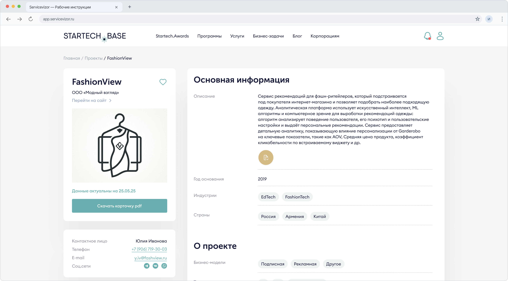
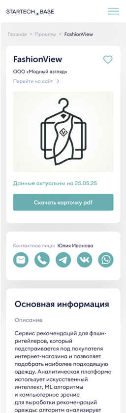

Визитка стартапа для инвестора
На Startech.Base основатели заполняли анкету для поиска инвестиций. Чтобы представить проект за пределами платформы, им приходилось собирать те же сведения в презентацию. Мы дали основателям возможность отправить инвестору ссылку на визитку проекта.
Открыть Startech.BaseО проекте

Одна анкета для двух сценариев
В анкете уже были описание продукта, состав команды, бизнес-модель и стадия развития. Если основатель обновлял эти данные на платформе, у инвестора на почте всё ещё могла лежать старая презентация.
Мы рассматривали отдельный конструктор презентаций, но для первой отправки инвестору нужные сведения уже были собраны. Я переработала структуру анкеты для чтения и спроектировала страницу, которую получатель открывает без регистрации.
Основатель решает, кому отправить визитку
Публикация в каталоге делала проект доступным для поиска. Основателю также нужен был способ показать проект конкретному инвестору. Мы разделили эти действия: можно оставить проект вне каталога и поделиться им по ссылке.
В кабинете я собрала ссылки на одной странице. Основатель создаёт ссылку, задаёт срок действия или лимит просмотров и отправляет её получателю. Позже здесь же можно проверить статус ссылки и посмотреть статистику.

Что видит инвестор по ссылке
В начале визитки я разместила описание продукта и контакты. Рядом с кнопкой скачивания PDF указала дату актуальности данных.

Ниже на странице инвестор может изучить команду, финансовые показатели и запрос на инвестиции. Посмотреть визитку целиком

Кабинет и визитка на телефоне
В мобильном кабинете у каждой ссылки оставила срок действия и две кнопки — скопировать и отключить. В визитке на телефоне сначала идут карточка проекта и контакты, а следом — описание.

